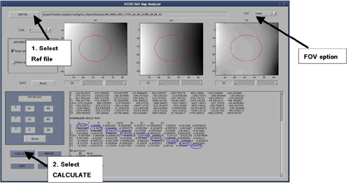

NOTE:
If the FOV is either 24cm or 28cm, make sure the FOV is set to Small. If the FOV is 48, make sure the FOV is set to Large. See Illustration 3 for location of FOV field. (
Illustration 3
)
Illustration 3:
HOSM Reference Map Analyzer
